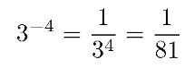
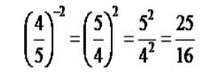

Registros dizem que a potenciação começou a ser utilizada a 1000 a.C., porém, foi com Arquimedes (287-212 a.C.) que a potenciação teve um uso mais significativo. Arquimedes era um grande matemático, físico e engenheiro. E em um dos seus trabalhos, onde o matemático gostaria de saber quantos grãos de areia seria necessário para preencher o mundo, ele desenvolveu um sistema de numeração para representar números muito grandes, obtendo o resultado de 10^51. Ele chegou nesse resultado fazendo contas como 10^8.10^8, utilizando a regra de multiplicação de potências com a mesma base.
Para fazer essa operação, é necessário multiplicar a base pelo número de vezes que o expoente pede, por exemplo: 2^5 = 2.2.2.2.2 = 32.
Começando com as potências de base negativa. Para calcular potências de base
negativa, basta ver os sinais representados pelo expoente. Caso ele seja par, o resultado será positivo.
Exemplo: -2^2= (-2). ( -2) = 4.
Caso o expoente seja ímpar, o resultado será negativo.
Exemplo: -2^3= (-2). (-2). (-2)
-2^3= 4. (-2) =
-2^3= -8
Exemplo de cálculo de potência com base inteira com expoente negativo:

Exemplo de cálculo de potência fracionária com expoente negativo:
